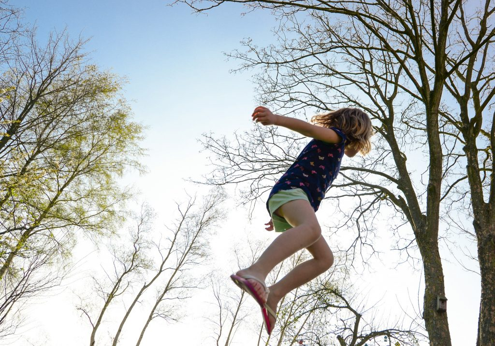

Análise de Comportamento
1ª Etapa
Investigar as relações funcionais para localizar as variáveis que prejudicam o desenvolvimento e a manutenção do comportamento.
Investigar as relações funcionais para localizar as variáveis que prejudicam o desenvolvimento e a manutenção do comportamento.
Analisar os problemas estabelecidos; diferenciar os diversos tipos de debilidade e perturbações motoras e encaminhar para o tratamento específico.
Acompanhar o progresso da criança durante seu desenvolvimento em diferentes etapas evolutivas.
O desenvolvimento infantil é um processo que começa desde a vida intrauterina, abrangendo vários aspectos, como crescimento físico, maturação neurológica e construção de habilidades vinculadas ao comportamento, às esferas cognitivas, social e afetiva, tornando a criança capaz de responder às suas necessidades e às do seu meio, de acordo com o seu tempo de vida (De SOUZA & MELLO, 2004; MIRANDA et al., 2003).
A evolução estáticomotora do neonato até a idade adulta depende da maturação do sistema nervoso central, sendo determinada por padrões geneticamente estabelecidos e estímulos ambientais, os quais são captados pelos órgãos do sentido e respondidos pelo cérebro como órgão de integração e coordenação, com reações complexas que decorrem automaticamente (FLEHMING, 2005).
Cada criança apresenta seu padrão característico, mas deve exibir manifestações de desenvolvimento características da idade em que ela se encontra. Com sua evolução, há uma constante observação no crescimento das estruturas somáticas e aumento das possibilidades individuais de agir sobre o ambiente (RAFAEL et al., 2010).
O desenvolvimento motor de uma criança é basicamente dividido em duas etapas: habilidade motora global e fina. A habilidade motora global é classicamente definida como a que envolve em sua manifestação a mobilização de grandes grupos musculares produtores de força do tronco, braços e pernas e inclui as reações posturais, o equilíbrio da cabeça, o sentar, o ficar em pé, o engatinhar e o andar (WILLRICH et al., 2006). A habilidade motora fina só se desenvolve depois de a criança ter dominado os movimentos ligados aos grandes músculos. A motricidade fina, como abotoar camisas e desenhar figuras, envolve a coordenação de músculos pequenos e coordenação entre olhos e mãos. Estas habilidades permitem às crianças maior senso de responsabilidade e cuidado pessoal (HABECHIAN & SANTOS, 2008).
A observação da motricidade global e fina da criança permite detectar como o desenvolvimento está se apresentando, facilitando a promoção de uma internação precoce para os desvios supostamente encontrados. Essa observação pode ser feita por testes. Entre eles, o Teste de Denver II, que é destinado a crianças com a faixa etária de 0 a 6 anos de idade que estão saudáveis, sem nenhuma doença, não sendo designado para gerar diagnósticos ou prever adaptações futuras e capacidades intelectuais, sendo melhor usado para comparar um dado desempenho da criança em uma variedade de tarefas com o desempenho de outras crianças da mesma idade (TECKLIN, 2003).
 Realizamos uma avaliação motora e indicativa em crianças de 02 a 11 anos com dificuldades em desenvolver sua psicomotricidade. Fazemos testes práticos com um conjunto de provas muito diversificadas e de dificuldade graduada, baseado na Escala de Desenvolvimento Motor, conduzindo assim, uma exploração minusiosa de diferentes áreas do desenvolvimento motor.
| Cód. | Testes | Dias |
|---|---|---|
| T1 | Motricidade Fina | Segunda e Quarta |
| T2 | Motricidade Global | |
| T3 | Equilíbrio | Segunda e Sexta |
| T4 | Esquema Corporal/Rapidez | Quarta e Quinta |
| T5 | Organização Espacial | Terça e Sexta |
| T6 | Linguagem/Organização Temporal | Terça e Quarta |
| T7 | Lateralidade | Quinta e Sexta |
Os primeiros estudos e ensaios científicos do protocolo EDM (Escala de Desenvolvimento Motor), foram realizados no início da década de 90, no Brasil, através da versão do livro clássico publicado na década de 60 “Éducation psycho-motrice et arriération mentale” dos autores franceses “Louis Picq e Pierre Vayer”. Os autores apresentavam um perfil psicomotor para crianças de 2 aos 5 anos e 6 aos 11 anos, com provas de outros autores clássicos (Ozeretski-Guilmain, Mira Stambak, Harris, Galifret-Granjon, Berges-Lezine, etc.) nas áreas de coordenação dinâmica das mãos; coordenação dinâmica geral; equilíbrio; rapidez; organização do espaço; estruturação espaço-temporal; e lateralidade. Durante esse período o perfil psicomotor (modelo clássico) foi aplicado em várias crianças com dificuldades na aprendizagem matriculadas na rede pública e ensino particular. Tal citação bibliográfica não possibilitava trabalhos científicos sobre desenvolvimento infantil, pois faltavam subsídios e elementos para configurar uma bateria de provas motoras.